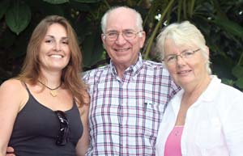

KRISTIN FRIEDLANDER
Tabitha Alterman, former apprentice, with Bob and Beryl Foerster, who grow organic coffee at
Dragon's Lair Kona Coffee Farm
in Hawaii. Read about her WWOOFing (Worlwide Opportunities on Organic Farms) experience in "
Learning to Farm on the Side of a Volcano
."